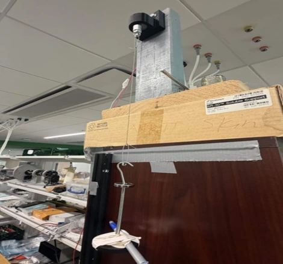

Undergraduate research · HBS Lab · Fall 2026
Modular TCP fabrication & characterization guide
While fabricating twisted and coiled polymer (TCP) muscles from silver-coated nylon for the HBS Lab's active cooling research, I encountered premature breaking and inconsistent coiling. During my literature review, I came across a study from the University of Calabria that used a guide to restrict unwanted movement of the hanging weight. This gave me a reason to explore a custom guide for the lab's existing fabrication setup. I was also tasked with making the rail reusable for future horizontal displacement characterization.
I compared sliding guides, rollers and a combined roller-and-track system. Since the deadweight was adjustable and the parts had to be 3D printed, I chose a simpler sliding carriage that could be removed without dismantling the setup. My main concerns were maintaining tension and preventing rotation and snagging.


Designing for rotation and friction
I referenced DC gearmotor specifications and the PLA material data sheet to establish a basis for sizing the guide. I used force and moment balances to estimate friction and bending from resisting rotation, with assumed transmitted torque, friction and effective printed stiffness for the preliminary calculations.
MTCP: transmitted torque; d: contact spacing; μ: friction coefficient; mg: moving guide mass; E: modulus; I: section inertia.
One preliminary load case predicted an added drag of 0.10 N (equivalent to 10.2 g of deadweight), excluding the moving guide's own mass. This helped me determine how much weight would need to be removed to maintain fabrication tension. The bending calculations guided my choice of rail geometry and clearance to reduce the risk of snagging.
After checking the first printed carriage, I kept the sliding fit and reduced the outer faces so they would clear the rail's fasteners under side loading. I used lower infill on the supported rails to save material and reinforced the motor mount because it carries the motor and fabrication loads.
Reusing the rail for active cooling
Building on my mentor's previous work on active cooling of TCP actuators, I designed a second carriage that uses the same rail. A string connects the TCP inside a fixed cooling tube to a removable rectangular post. A circular plate provides a larger surface for the laser displacement sensor, and an opposing preload would maintain tension during contraction and recovery.
I chose a rectangular post to prevent rotation and made its supported section longer than the exposed load height. Increasing the distance between the opposing contact reactions reduces the force required to resist the overturning moment, helping limit binding. This lets the lab adapt its existing research setup without printing a second rail system.
T: tensile load; h: exposed load height; L: supported engagement. Doubling L halves this reaction in the idealized model.

Structural verification
I 3D printed the initial rail and carriage and checked their sliding fit. My next step is to compare the hand calculations with SolidWorks FEA under matching load conditions, focusing on the displacement caused by resisting rotation and the clearance required to prevent snagging.
| Load case | Hand calc. | FEA | Difference |
|---|---|---|---|
| Rail lateral load | ___ mm | ___ mm | ___% |
| Post bending | ___ mm | ___ mm | ___% |
The hand calculations and FEA are simplified estimates; neither directly models the printed infill or layer adhesion. Loaded testing will determine the actual friction and deformation.